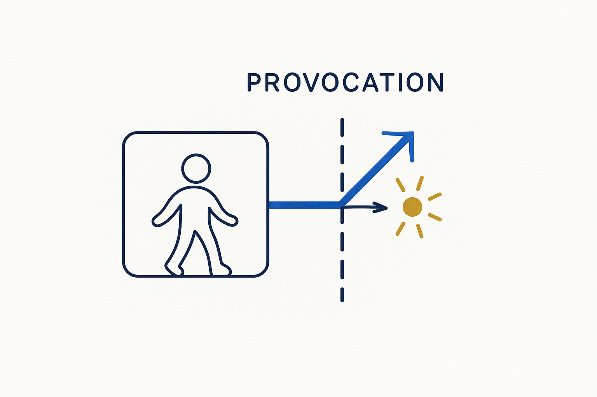

Positive provocation — the deliberate, constructive challenge that breaks a stuck field out of its impasse without tearing people down.

> Positive provocation — the deliberate, constructive challenge that breaks a stuck field out of its impasse without tearing people down.
Provocation is the first move in the arc: impasse → provocation → breakthrough → momentum. It is the deliberate act of putting every assumption back under the light — the tool, the model, the process, the meeting — and asking the hard question the comfortable answer lets you avoid. Without it, a stuck field stays stuck, because nothing changes until someone is willing to name what isn’t working.
The important word is positive. This is not cynicism or vendor-bashing for its own sake. It is provocation aimed at forward motion: challenge the way we model, the way we spend, the way we meet — not to win an argument, but to open a door. Done right, it energizes rather than deflates; people leave a provocative session with a sharper question and more momentum, not a bruise.
A provocative workshop is where this lives: bring the impasse into the room, question it out loud, and turn a stuck conversation into directed forward energy. Provocation without a next step is just noise; provocation that lands opens the breakthrough.
Where it lives: the attitude layer of Breakthrough Modeling — the spark that starts the arc.